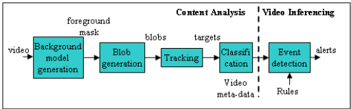
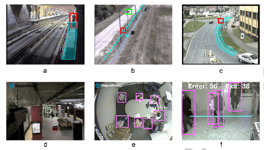

Data publicării: 30.07.2017
Autor articol: Anca Ignat
Tehnologia sistemelor inteligente de supraveghere video ([1]-[5]), tinde să migreze de la procesarea de pe dispozitive speciale de calcul la procesarea directă pe camerele video sau foto.
Prima problemă în dezvoltarea tehnologiei IVS a fost multitudinea de situații și medii în care poate fi aplicată dar și varietatea cerințelor create de diferiți clienți.
A doua problemă a fost trecerea de la crearea algoritmilor la crearea programelor în diverse medii de programare, deoarece această trecere a trebuit tratată cu un compromis datorat resurselor limitate ca memoria, viteza de procesare și a presupus de multe ori modificarea algoritmilor.
Produsele IVS care au devenit comerciale pot fi instalate, configurate și întreținute de persoane care nu sunt experți în domeniu.
Performanța unui sistem este influențată de o multitudine de variabile, cum ar fi:
Parametrii camerei – tipul, calitatea imaginilor, rezoluția, adâncimea pixelilor, frame-rate, white-balance, etc.
Parametrii de comunicare – canalul de comunicare, tipul de compresie, etc.
Mediul de procesare – hardware-ul care procesează imaginile este limitat de memorie și de viteza de calcul.
Parametrii constanți de mediu – locul în care este montată camera poate influența performanța IVS, parametri ca unghiul de filmare, poziționarea în interior sau exterior, modul de instalare a camerei (camera mobilă sau fixă) sau tipul de obiectiv urmărit (drumuri, încăperi, etc.)
Parametri variabili de mediu – iluminația, reflexiile, condițiile meteo, schimbarea anotimpurilor, praful, luminile sau umbrele pot influența calitatea unui IVS.
Parametrii aplicației – obiectivele de interes (oameni, vehicole, opere de artă, etc.) , limitele de toleranță și rata de alarme false sunt foarte importante în proiectarea acestor sisteme.
Datorită multitudinii de factori care pot influența funcționarea unui sistem IVS și ținând cont și de detalii specifice de care depind de acești factori, este dificil de specificat un framework de tastare care să surprindă exhaustiv multitudinea de probleme ce pot să apară în funcționarea unui asemenea sistem. Problema principală devine în această situație, reducerea spațiului de testare astfel încât să fie manevrabil dar nu foarte simplist iar rezultatele să fie reprezentative.
Imaginea de amsamblu a unui sistem IVS

Cadrele video sunt preluate de componenta „Background model block” care aplică o statistică pentru fiecare pixel, etichetând pixelii care sunt diferiți față de modelul obișnuit și cei care au valoare obișnuită de fundal, iar ceea ce rezultă este o mască de primplan. Această mască este folosită la gruparea pixelilor în grupuri cu ajutorul unor algoritmi din pasul „Blob generation”. Urmează urmărirea acestor grupuri de pixeli (‚pete’) de la cadru la cadru, rezultând ținte spațio-temporale („Tracking”). Aceste ținte sunt clasificate în modulul „Clasification”, unde se determina tipul țintei (om, animal, autovehicol, etc.) sau chiar categoria (camion, tractor, etc.). Rezultatul acestor pași, este un video care conține descrierea țintelor filmate. Utilizatorul poate configura sistemul prin stabilirea unor reguli, care pot detecta, spre exemplu, parcarea neregulamentară a unor autovehicole sau intrarea unor persoane în anumite zone de interes.
Figura următoare conține câteva scenarii:

În imaginea a se observă o persoană care intră în perimetrul interzis din metrou iar în imaginea b se observă o persoană care intră pe o proprietate privată. În imaginea c se observa o mașină parcată neregulamentar, în figura d se vede un bagaj abandonat. În imaginile e și f sunt contorizate persoanele (figura e, personale care participă la o conferință iar figura f, persoanele care intră și ies dintr-un magazin).
Cu ajutorul acestui sistem de monitorizare video sunt detectate în timp real diferite evenimente sau activități suspicioase.
Concluzii
Un sistem de supraveghere video inteligentă este un sistem complex care depinde de foarte mulți factori, care pot influența rezultatul în foarte diversele situații care apar în urmărirea în timp real. Un sistem bun trebuie să țină cont, pe cât posibil, de diversitatea cazurilor care pot să apară în mediul în care este montat și să trateze cât mai multe excepții pentru a micșora numărul de alarme false și pentru a detecta evenimentele într-un mod profesionist.
Probleme de computer vision în sistemele de supraveghere video inteligentă
Sistemele de supraveghere inteligente, față de cele clasice, pasive îmbunătățesc informațiile prezentate prin recunoașterea automată a obiectelor, urmărirea lor, interpretarea scenei urmărite, indexarea/identificarea evenimentelor în timp. Aceste sisteme sunt folosite pentru controlul accesului, identificarea de persoane, detectarea situațiilor anormale. Un alt domeniu în care ar putea fi utilizate sistemele de vizualizare inteligente sunt supravegherea zonelor cu întindere foarte mare. În asemenea situații, în afară de problemele de interpretare a imaginilor apar probleme tehnice legate de selecția, amplasarea și sincronizarea dispozitivelor de urmărire. În cele ce urmează, vom descrie problemele legate de interpretare a imaginilor în supravegherea video [2].
Interpretarea imaginilor extrage dintr-un șir de cadre, informații de nivel înalt despre evenimentele vizuale care au loc, folosind tehnici de îmbunătățire a imaginilor, detecția mișcării, urmărirea obiectelor și înțelegerea conținutului. Problemele care apar în prelucrarea fiecărei imagini sunt cele legate de porțiuni lipsă ale obiectelor de interes (ocluzie), schimbări ale iluminării și a condițiilor meteo care necesită dezvoltarea unor algoritmi robuști la asemenea modificări. O altă provocare o constituie necesitatea folosirii unor metode rapide de extragere a informațiilor care să permită obținerea unui sistem de supraveghere performant în timp real.
Algoritmii de computer vision care apar în problemele de interpretare și înțelegere a imaginilor sunt următorii: îmbunătățirea imaginilor, detecția mișcării, urmărirea obiectelor, înțelegerea comportamentului (analiza mișcării oamenilor).
Îmbunătățirea imaginilor este folosită pentru a scoate mai bine în evidență scena urmărită și elementele de interes din imaginile analizate. Tehnicile de îmbunătățire folosite sunt de trei categorii: bazate pe frecvență, bazate pe histograme și tehnici care folosesc transformate ale imaginilor.
Detectarea mișcării in sistemele de supraveghere inteligente sunt folosite pentru a găsi obiectele de interes care sunt în mișcare. Metodele clasice de detecție a mișcării folosesc tehnici precum extragerea fundalului dintr-o imagine, diferențe temporale sau fluxurile optice. Pentru sistemele care folosesc camere active se folosesc tehnici modificate de extragere a fundalului, extragerea și potrivirea trăsăturilor, modele geometrice ale camerei.
Urmărirea obiectelor are ca scop de a identifica un obiect aflat în mișcare în cadrele consecutive ale unui video. Realizarea cu mare precizie a acestei etape este un factor foarte important în asigurarea performanței interpretării scenei analizate. Dificultățile ce apar în rezolvare acestei probleme țin de rapiditatea cu care se mișcă obiectul (pot apărea schimbări bruște în viteza de mișcare), de faptul că obiectele își schimbă forma, probleme de ocluzie. În funcție de modul de reprezentare a obiectelor, metodele sunt de tip: urmărire a punctelor, urmărire a nucleului sau urmărire a contururilor. În prima situație obiectul este caracterizat prin anumite puncte care sunt identificate și urmărite în cadrele consecutive. Acest tip de reprezentare este robustă la schimbări de rotație, scală și transformări afine. Urmărirea nucleu încadrează obiectul de interes într-o regiune standard (dreptunghi, elipsă sau cerc). Mișcarea acestei regiune este urmărită de-a lungul cadrelor. Când se folosește acest tip de reprezentare a obiectelor se presupune că mișcarea are loc după un model parametric (translație, conformă, afină). Pentru situațiile în care obiectele au forme complexe și care își schimbă des forma de-a lungul timpului (cum sunt oamenii sau animalele) se preferă reprezentările de tip contur pentru obiecte.
Etapa de înțelegerea a comportamentului este în principal focalizată pe analiza mișcării oamenilor. Această analiză se poate face pe trei nivele de detaliere: vag, intermediar și înalt. În primul caz, silueta umană este inclusă într-un dreptunghi sau o elipsă și se urmărește evoluția acestor elemente cadru cu cadru. La nivel intermediar, oamenii sunt reprezentați prin părțile corpului (cap, trunchi, mâini, picioare), urmărirea realizându-se prin identificare mișcării fiecărei părți a corpului. Recunoașterea gesturilor mânii, a poziției și gesturilor feței sau a capului constituie elemente care sunt analizate la urmărirea detaliată. Sistemele de supraveghere de cele mai multe ori folosesc primele două nivele de detaliere, cel de-al treilea e folosit în interfețele om-calculator. Pentru modelarea corpului uman sunt folosite tehnici bazate pe model sau tehnici bazate pe înfățișare. Tehnicile bazate pe model sunt costisitoare din punct de vedere al timpului de lucru, cele bazate pe înfățișare deși fac mai puține calcule, sunt sensibile la zgomot. Recunoașterea activității umane face parte din tehnicile de nivel înalt și se poate face în două moduri: activitatea umană este tratată ca o problemă de clasificare folosindu-se secvențe de activități pre-definite, sau pentru recunoaștere se folosește informație dinainte cunoscută (inferențe bazate pe reguli, restricții fizice, analiză cauzală și analiză sintactică).
Sistemele de supraveghere inteligente încearcă să înlocuiască operatorul uman folosind tehnici de analiză automată a conținutului video înregistrat.
Referințe bibliografice
Haering, N., Venetianer, P. L., & Lipton, A. (2008). The evolution of video surveillance: an overview. Machine Vision and Applications, 19(5), 279-290.
Kim, I. S., Choi, H. S., Yi, K. M., Choi, J. Y., & Kong, S. G. (2010). Intelligent visual surveillance—a survey. International Journal of Control, Automation and Systems, 8(5), 926-939.
Devasena, C. L., Revathí, R., & Hemalatha, M. (2011). Video surveillance systems–a survey. IJCSI International journal of computer science Issues, 8(4), 1694-0814.
Venetianer, P. L., & Deng, H. (2010). Performance evaluation of an intelligent video surveillance system–a case study. Computer Vision and Image Understanding, 114(11), 1292-1302.
Mahalanobis, A., Cannon, J. L., Stanfill, S. R., Muise, R. R., & Shah, M. A. (2004, April). Network video image processing for security, surveillance, and situational awareness. In Proceedings of SPIE (Vol. 5440, pp. 1-8).